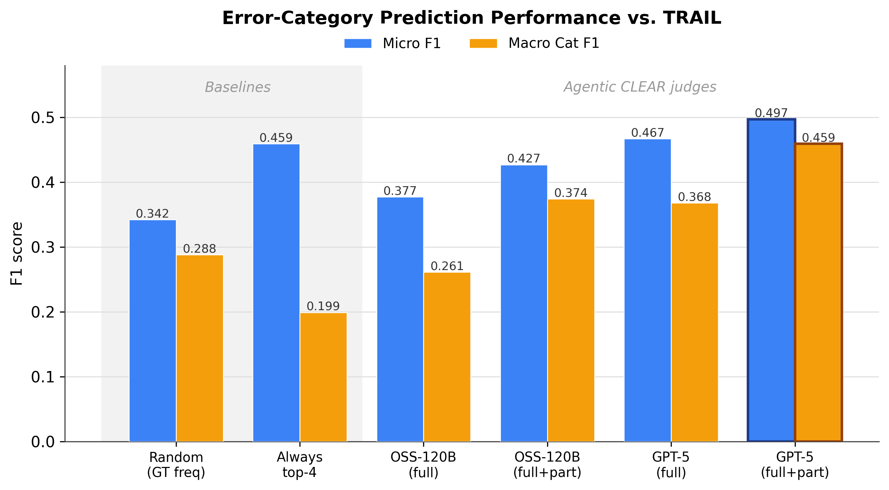

Agentic CLEAR surfaced 195 unique recurring issues across all configurations. Select a comparison view:
TL;DR
The problem
Agent observability platforms capture execution traces but lack meaningful evaluation. Developers must manually inspect large numbers of traces to identify systemic failures. Research-driven error taxonomies are static and require extensive human annotation.
What Agentic CLEAR does
An open-source Python package that automatically evaluates agent traces at three levels of granularity (system, node, trace), dynamically surfaces recurring failure patterns without predefined taxonomies, and presents them in an interactive dashboard. Built on top of CLEAR's LLM-as-a-Judge methodology.
Getting Started
pip install clear-eval
# Run on sample traces (3 traces, ~2 minutes)
run-clear-agentic-eval \
--data-dir src/clear_eval/sample_data/agentic/research_agent_traces/mlflow \
--results-dir my_results \
--from-raw-traces true \
--agent-framework langgraph \
--observability-framework mlflow \
--max-files 3 \
--eval-model-name gpt-4o \
--provider openai
# Launch the dashboard
run-clear-agentic-dashboard
run-clear-agentic-eval \
--data-dir src/clear_eval/sample_data/agentic/research_agent_traces/mlflow \
--results-dir my_results \
--from-raw-traces true \
--agent-framework langgraph \
--observability-framework mlflow \
--max-files 3 \
--eval-model-name gpt-4o \
--provider openai
# Launch the dashboard
run-clear-agentic-dashboard
Supported Frameworks
| Agent Framework | Observability Platform | Status |
|---|---|---|
| LangGraph | MLflow | Supported |
| LangGraph | Langfuse | Supported |
| CrewAI | Langfuse | Supported |
| Custom | Any (via CSV) | Supported |
Pipeline

Trace Preprocessing
OpenTelemetry-compatible traces from MLflow, Langfuse, or CSV converted to unified representation.
Multi-Level Evaluation
LLM judge evaluates each trace: step-wise, trace-wise, and rubric-based.
CLEAR Aggregation
Cluster feedback into system-wide and node-specific recurring issues.
Dashboard
System, Node, and Trace views with filtering, path analysis, and score prediction.
Dashboard

Workflow View
Interactive graph of agents and transitions with call counts
Node Analysis
Per-agent CLEAR issues, score distributions, and drill-down
Trajectory Explorer
Browse trajectories filtered by length, agent, or score
Path Analysis
Common path patterns, success vs. failure analysis
Temporal Analysis
Agent position and score progression across steps
Score Prediction
ROC curves for predicting trajectory success
Results
Experimental Setup
| Benchmark | Agent | Model | # Traces | Source |
|---|---|---|---|---|
| AppWorld | CUGA | GPT-4o | 417 | Leaderboard |
| GAIA | Generalist Agent | Claude 4.5 Sonnet | 165 | HAL |
| Generalist Agent | GPT-4.1 | 165 | HAL | |
| HF DeepResearch | Claude 4.5 Sonnet | 165 | HAL | |
| HF DeepResearch | OpenAI o3 | 117 | TRAIL | |
| SWE-bench Verified | Generalist Agent | Claude 4.5 Sonnet | 50 | HAL |
| TAU-bench | Generalist Agent | Claude 3.7 Sonnet | 50 | HAL |
Discovered Issues
CUGA agent on AppWorld (GPT-4o backbone, GPT-5 judge). Issues sorted by frequency.
| System-Level Issues | TaskDecompositionAgent (Node-Level) |
|---|---|
| Execution flow management flaws: inefficient execution and incomplete coverage | Assumes unsupported app capabilities; violates strict app constraints |
| Validation and preconditions gaps: skips critical pre/post-action checks | Workflow coherence errors: reasoning, tasks, and ordering don't align |
| Blockage handling failures: no fallbacks, declares failure prematurely | Fails to return the user's intent verbatim for single-app tasks |
| Incomplete execution: stops short of finishing core task (checkout, send, save) | App boundary and handoff mistakes: wrong app assignment |
| Entity resolution weaknesses: brittle matching and poor disambiguation | Insufficient disambiguation criteria for selecting among items |
| API/framework contract noncompliance: schema/role/output violations | Poor handling of absent data and capability limits; lacks fallbacks |
| Intent and channel selection errors: misinterprets request, wrong app/medium | Missing required parameters or constraints (time, recipients, labels) |
| Shopping cart and selection integrity issues: contaminated carts, mishandled items | Insufficient handling of edge cases and input/format variations |
| Edge-case robustness deficiencies: time zones, date boundaries, unit normalization | Missing finalization: fails to perform the final action or deliver answer |
| Data integrity in inputs: hard-coded or unverified identifiers instead of retrieved data | Adds unsupported assumptions or extra details not provided by the user |
Same agent (HAL Generalist), same model (Claude 4.5 Sonnet), GPT-5 judge. Domain-specific issues emerge without benchmark-specific prompting.
| GAIA (Research Tasks) | SWE-bench Verified (Code Tasks) |
|---|---|
| Lack of cross-verification across independent sources | Broken patch output: malformed diffs and missing hunks |
| Sourcing failures: unreliable or unverifiable references | Monkey-patching instead of maintainable overrides |
| Premature conclusion without exhausting search avenues | Missing regression tests for the fix |
| Failure to adhere to output formatting specifications | Environment prerequisites not checked before applying fix |
| Contradictory or self-conflicting statements | Incomplete understanding of codebase dependencies |
| Redundant tool calls and inefficient search patterns | Fails to isolate the minimal reproducible case |
| Incomplete data processing: partial extraction from documents | Patch applies to wrong file or function scope |
| Unreliable numerical or date parsing from web sources | Hard-coded values instead of dynamic resolution from context |
| Fails to synthesize findings into coherent final answer | Missing import statements or dependency declarations |
| Over-reliance on a single information source | Does not verify fix compiles or passes existing tests |
HAL Generalist Agent on GAIA, GPT-5 judge. Shared issues dominate, but each model shows unique tendencies.
| GPT-4.1 Backbone | Claude 4.5 Sonnet Backbone |
|---|---|
| Source verification gaps (shared) | Source verification gaps (shared) |
| Tool misuse and redundant calls (shared) | Tool misuse and redundant calls (shared) |
| Noncompliance with required output formats (shared) | Failure to adhere to output formatting specifications (shared) |
| Incomplete task execution: stops before delivering final answer (shared) | Incomplete task execution: abandons subtasks mid-stream (shared) |
| Insufficient error recovery after tool failures (shared) | Insufficient error recovery after tool failures (shared) |
| Unique: Prematurely giving up after errors instead of retrying or pivoting | Unique: Contradictory or self-conflicting statements; inconsistent interpretation |
| Unique: Over-reliance on single source without triangulation | Unique: Excessive tool calls before synthesizing available information |
| Unique: Fails to decompose complex queries into sub-questions | Unique: Hallucinates tool capabilities that don't exist |
| Unique: Rigid sequential execution; does not parallelize independent searches | Unique: Verbose reasoning chains that lose track of the original goal |
| Unique: Misinterprets ambiguous instructions as impossible tasks | Unique: Overconfident conclusions from insufficient evidence |
Alignment with Human Taxonomies (TRAIL)

Score Prediction (AUC)
.png)